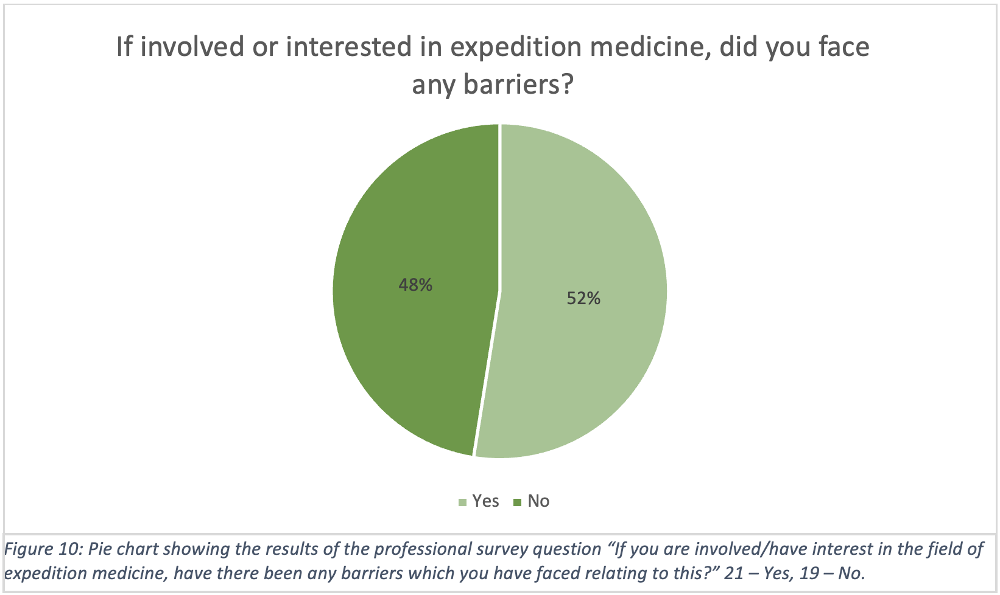
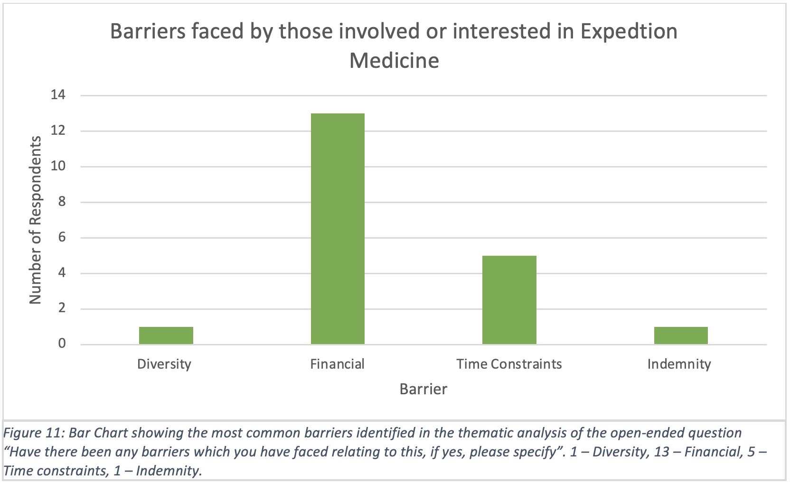

In the field of medicine, many aspiring professionals face barriers (7). These obstacles can extend into established specialties, making it difficult for certain individuals to pursue their desired careers. This, alongside the rapidly changing profile of the medical profession with increased diversity (8), means it is essential that a novel medical specialty is developed with inclusivity in mind. When reviewing the literature, many barriers were identified which should be addressed. (figure 10) (figure 11)
 Diversity
During our initial review of the literature, it was assumed that Expedition Medicine was dominated by caucasian men, and therefore a lack of diversity across gender and ethnicity would be a prominent hurdle to entering the field. This conclusion was extrapolated from the understanding that both fewer women are engaged in mountaineering (9) and the underrepresentation of women in Expedition Medicine publications (10). However, the research findings starkly contrasted this preconception. The medical professional survey yielded 0 respondents who indicated gender or ethnicity as an issue. However, it must be noted that 82% (114/138) of the sample surveyed ethnically identified as white. Though this is reflective of ethnic distribution across the NHS workforce (11), an even greater proportion, 100% (9/9) of those experienced in Expedition Medicine identified as white. This lack of representation of ethnic minorities within our sample may undermine the validity of these findings, as the scale of these barriers may not be accurately reflected. Additionally, semi-structured interviews revealed a spectrum of views on diversity within the field, with polarised opinions such as:
"It's all-white middle-class males." - Interviewee 3
"The majority of my colleagues are female." - Interviewee 2
The comment from interviewee 2 perhaps reflects that fast changing demographics of the medical profession with the medical workforce is slowly shifting to a female dominated sector (12). Interviewee 3, however, was not an expedition medic. They were a person who went on expeditions and stated to have no experience in the medical field other than basic first aid training, giving a layman's perspective on expedition as a whole.
Financial
Funding was identified as one of the most prominent barriers. In the medical professional survey, of the 21 respondents with personal experience within Expedition Medicine, 13 identified funding as one of the main barriers they experienced (62%), with many training courses ranging from £1000-£3000 (13).
Funding was identified as the major barrier to inclusion in the interviews, as mentioned by all interviewees. It was often stated that Expedition Medicine was most accessible to people from wealthy backgrounds, who could afford to take time off, or time out of a training programme, to complete expeditions. This was identified as a particular issue for young doctors early in their careers, who are usually more likely to be interested in Expedition Medicine. Doctors who have children, dependents or other financial commitments were also identified as more likely to be burdened by these financial barriers. Contradictory to this, one participant expressed how funding had been easy to come by, and that all but one of their expeditions had been funded by a third-party, suggesting mixed experiences.
It is important to note that whilst finance was the predominant barrier explored in the research, money is rarely a factor that exists alone. There is an intersectional dynamic between components that make up an individual’s identity such as ethnicity, gender and class. Each of these aspects has a complex interaction with the other, hence, to claim that funding is the sole barrier to accessing Expedition Medicine would be an inaccurate conclusion.
Indemnity
A major obstacle identified in both the professional survey and the interviews was a lack of accessible indemnity options appropriate for expeditions. One survey respondent described indemnity problems as the main hindrance in their pursuit of a career in Expedition Medicine.
The complicated process of applying for specialist medical indemnity for Expedition Medicine can be challenging, as even seasoned professionals may struggle to understand the complexities of indemnity. Some worried they may risk legal action by going on expeditions without sufficiently comprehensive indemnity. Additionally, one participant mentioned that indemnity is becoming increasingly expensive, adding to the financial burden of going on expeditions. The increase in medical indemnity further maintains the inequalities within the field making it so that only the financial “elite” are able to participate in Expedition Medicine. This reflects a political struggle within medicine, closing the off to individuals who struggle with income.
Return To Findings“This site was made by a group of University of Edinburgh medical students who studied this subject as part of the SSC. This webfolio has not been peer reviewed. We certify that this webfolio is our own work and that we have authorisation to use all the content (e.g. figures / images) used in this webfolio”
Tutor = Dr Oliver Vick (Oliver.Vick@ed.ac.uk)
Word Count = 726
Home